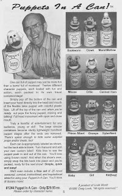

Final Newsy Vents Give-away - Day #15
8/31/2011
{kind=link}

Remember the Puppets In A Can? Twelve different character puppets, each packed in a gallon can. Your hand entered the puppet from the bottom of the can so when the top lid was removed - up popped the puppet for fun and action. They were wonderful.
This was the final new item produced by Lovik World for sale through Maher Studios. The year was 1997. We were on a roll, offering a lager selection of ventriloquist puppets, figures, and related products than at any other time in the history of Maher Studios. Then suddenly, with absolutely no warning, the bottom fell out. Totally unannounced and unexpected, Craig left his family, his shop, his business, and his partnership with me and disappeared into his own private future without a goodbye to anyone. We were all devastated and the days were bleak. I scrambled frantically to fill orders as best I could from inventory on hand while at the same time hurriedly reprinting catalogs to eliminate the many products no longer available.
I'll be forever grateful to Pat (Craig's ex) and Keith (their son) for eventually picking up the pieces of the figure making business and going into production of the Knee Pals themselves, keeping Maher Studios supplied with figures for the few years remaining until my retirement. I believe this is the first I've written publicly about those dark days. There's no need to go into further details, but it is a part of Maher Studios history and should be on the record.
{kind=link}
This being the Final Day #15 of our Newsy Vents give-away, I would like to once again thank Bob Abdou from providing all the back issues I have been giving away for these two weeks. Bob actually has (or had) more copies of Newsy Vents that I have! Several of you have asked about the possibility of purchasing back issues. Unfortunately, I have none to sell. So this rare opportunity of going through and sharing some miscellaneous back issues has been most enjoyable to me, and I hope enjoyable for you as well.
I'm awarding this final set of five back issues today to Jessica Woolsey. Enjoy!